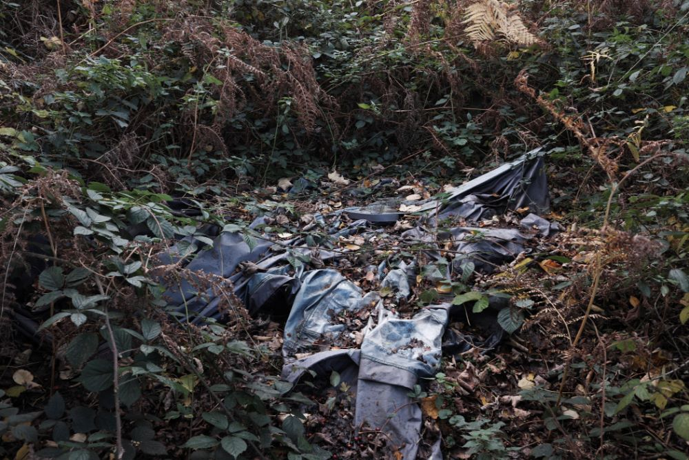

Estovers : the right to the wood on a common. This might be whole trees or coppicing for firewood. The word Estovers derives from old french estovoir -to be necessary, and Latin est opus -there is need (collins). The etymology emphases appropriating land as a necessity.
Noun. The subtle but persistent feeling of being out of place, as maladapted to your surroundings as a seal on a beach.
I came across this term reading Losing Eden. A lot of my work fits the concept.
Interfacial and ambiguous spaces frequently produce a similar confusing feeling. It occurs when observing an artefact foreign to the surrounding environment therefore lacking context.
The muddle of human and natural agency that is often present within interstitial wilderness sites creates conceptual as well as physical confusion (Jorgensen and Tylecote, 2007, p. 445).
Examples taken from the above sketchbook scan: a metal post and chain on a woodland access road, a discarded orange bag in a patch of dead ferns, and a drain pipe obstructing a woodland view. All are examples of juxtaposed artificial artefacts against a natural surrounding.
The opposite can also occur by observing nature within an urban environment. For example, the Buddleja growing in the cracks of a brick wall and pavement found at the side of a car park.
Plastic is often a source of monachopsis. I have found plastic bags, chairs, and tents in interfacial spaces.
Wind snagged dog bag in the hawthorn
Strange pieces of debris of twentieth-century capitalism seem to have some of the capacity to inspire awe as the left-over artefacts of other ages – like Stonehenge. Like such ancient relics, the relics of our own age now stand outside the humdrum landscape of everyday life (Shoard, 2000, 84).
When I read Shoard’s description of twentieth-century capitalist relics, I always think back to this image I took of a burnt-out car in a field of corn. Reflecting on the concept of monachopsis for this newsletter, I decided to put the image to use. I found the digital file. Printed it for the first time. Pressed it in my sketchbook. The image is fourteen years old! Playing into the contextualization of the relic of our own age. Inadvertently I have realized I have come full circle returning to capturing scenes like these that interest me.
Bibliography
Jorgensen, A. and Tylecote, M. (2007) Ambivalent landscapes—wilderness in the urban interstices, Landscape Research, 32(4), pp. 443–462.
I found this abandoned tent last year whilst carrying out photographic work for my masters. Since then I've made repeated visits to this [[wildscape]] between an encroaching urban housing estate, recreational field, and banal rural agrarian fields.
In summer I captured the surrounding nature engulf the collapsed tent, only to fall in the wet autumn, and later snow in the winter. I am wondering what the long term effects are going to be. Will the freezing winter break down the plastic or will next years bramble and fern completely envelop it and grow through the material.
Despite the passing of time and the repeated visits, I have only just started making suitable sequences. Photographic projects can be slow.
Beside the environmental documentation, the aim is part of a larger personal project escaping stale urbanity (and covid) for the liberating {marginal spaces} and their {tiers-paysage} nature. A similar contemporary narrative lifted from [[Stalker]].
SummerAutumnWinter
At the time of writing, better resolution images can be found on the main website.